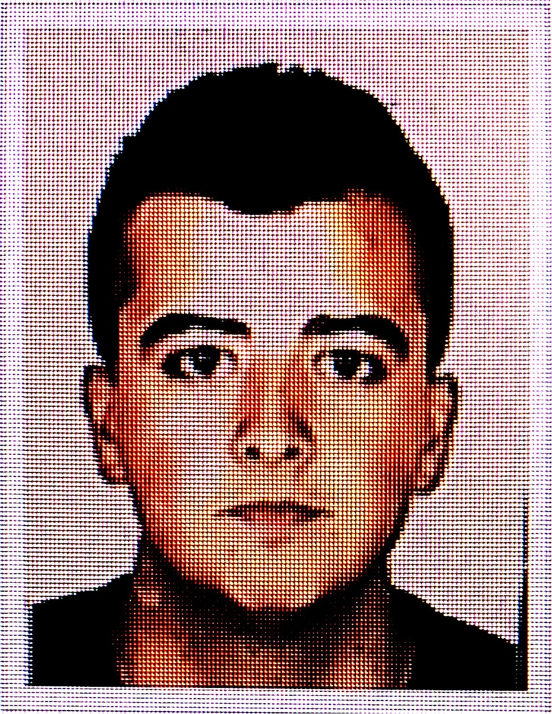

Coucou ! Bienvenue sur le E-Portfolio de Stéphane Vilarinho
Présentation
Bonjour, je m'appelle Stéphane, j'ai 19 ans, je suis né le 22/02/2000 à Suresnes et je suis d'origine portugaise. Je suis actuellement en première année d'école de commerce, au pôle Léonard de Vinci situé dans le centre des affaires de la Défense. J'habite à Aulnay-sous-bois depuis 5 ans, avant je demeurais à la Courneuve.
Mes passions
Football
Il s'agit là de mon sport préféré, j'en ai effectuer pendant longtemps. J'adore jouer et regarder le football.
Sport
J'aime me dépenser, repousser mes limites.
Voyage
J'adore découvrir de nouveaux lieux et de nouvelles cultures, c'est très enrichissant.
Mon parcours
J'ai fait une partie de ma scolarité à Aubervilliers, au collège Notre-Dame-des-Vertus, j'y étais scolarisé entre la sixième et la quatrième. J'ai ensuite déménager à Aulnay-sous- bois et effectué ma dernière année de collège à l'Espérance, où j'ai obtenu mon brevet avec mention très bien. J'ai ensuite effectué mes trois années de Lycée, au lycée l'Espérance; j'ai suivi la filière Scientifique, et j'ai obtenu mon Bac S en 2018. J'ai entamé une année en PACES, mais cela ne m'a pas plus, j'ai donc décidé de me réorienter vers le commerce, et je suis actuellement en première année a l'EMLV.